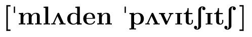
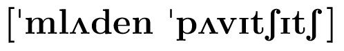

This is my "J'accuse Page" (My home page is here )
Mladen Pavičić

 

"a" is pronounced as "u" in "but," "e" as "e" in "get,"
"i" as "i" in "rid," and both accented "c"s as "ch" in "church"
Redoviti profesor u trajnom zvanju, Humboldt Fellow, Senior Fulbright Fellow
Procelnik katedre za fiziku, na
Gradjevinskom fakultetu
Sveucilista u Zagrebu.
Snail mail address: Gradjevinski fakultet, Zavod matematiku,
Kaciceva 26, HR-10000 Zagreb, Croatia. Phone: +385-1-4871627;
Fax: +385-1-4828050; Email: pavicic at grad dot hr
J'accuse...!
Prijedlog projekta: KVANTNO RAČUNARSTVO, KVANTNA KOMUNIKACIJA I KVANTNI ALGORITMI
1. status: cinično i groteskno odbijeno: "PREVIŠE REFERENCI"; bez obrazloženja;
>>>
Uložen prigovor s detaljnom analizom odbijanja i usporednim prikazom svih projekata prihvaćenih za potporu
<<<
2. status: ponovo cinično, groteskno i neistinito odbijeno: "PREVIŠE REFERENCI";
U
prijedlogu projekta
je jasno izdvojeno 6 znanstvenih
"RADOVA" (2 x 3 suradnika) koji su se tražili.
Nisu se tražile
"reference", nego
"RADOVI".
Knjiga, koja je
posebno i jasno izdvojeno dodatno navedena, se u prirodnim znanostima
ne smatra znanstvenom radom. Knjiga se ne smatra znanstvenim radom
niti kod izbora u zvanja, niti u prijavama projekata
pri Ministarstvu ili Zakladi, niti se na bilo koji
rezultat iz knjige igdje može referirati kao na
"objavljeni rad''.
>>>
3. status: Uložena žalba na prethodne odluke
<<<
"Traži se revizija, jer su u prijavi
bili zadovoljeni svi formalni uvjeti."
>>>
4. status; 13.1.2014. Vrlo mi je neugodno i sramim se priznati da
nikakav sluzbeni odgovor do sad nisam primio. U svijetu jedino
multinacionalne kompanije ne odgovoraju na pisma. Je li to
znak naseg povezivanja sveucilista s privredom?
<<<
Četvrto pismo Rektoratu.
Za razliku od Zole, ja ne znam tko je iza ovakvog neprimjerenog gaženja
znanosti u ustanovi gdje bi ona trebala biti najcjenjenija, ali znam
da takva znanost neće rezultirati boljim znanstvenim rezultatima i da
neće privući nove znanstvenike. Također znam da ovakvo neosnovano
arogantno ponašanje znanstvenika po znanstveniku neće doprinijeti
boljoj suradnjih znanstvenika, a niti njihovom odrastanju.